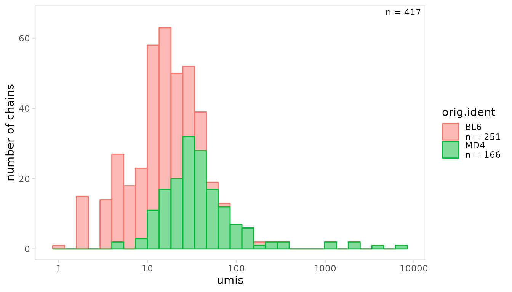
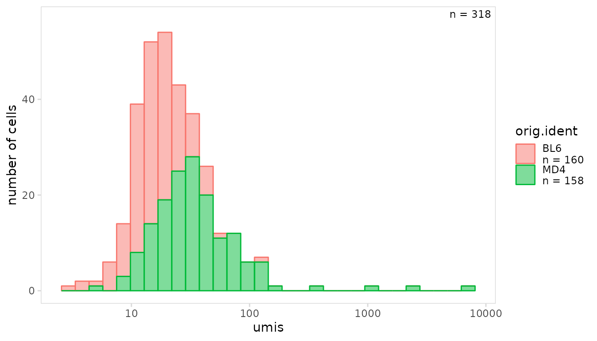
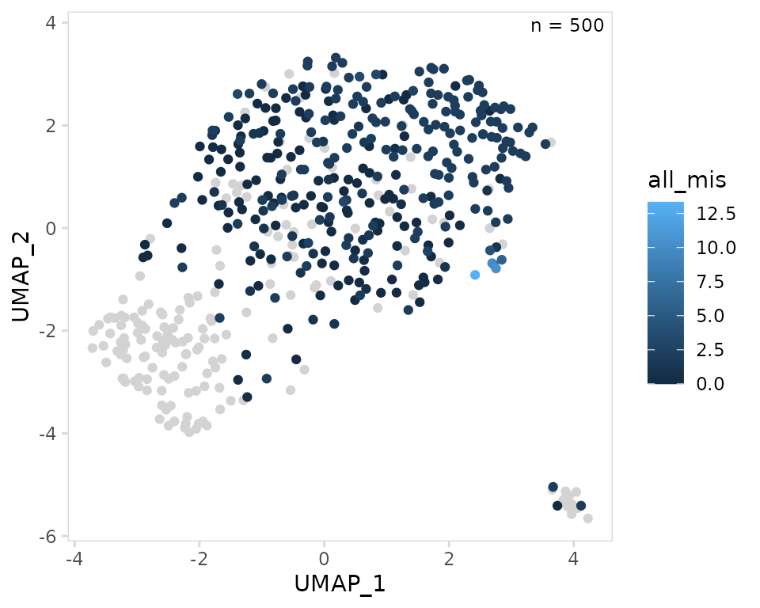

This vignette provides detailed examples for plotting V(D)J data imported into a single-cell object using djvdj. For the examples shown below, we use data for splenocytes from BL6 and MD4 mice collected using the 10X Genomics scRNA-seq platform. MD4 B cells are monoclonal and specifically bind hen egg lysozyme.
library(djvdj)
library(Seurat)
library(ggplot2)
# Add V(D)J data to object
vdj_dirs <- c(
BL6 = system.file("extdata/splen/BL6_BCR", package = "djvdj"),
MD4 = system.file("extdata/splen/MD4_BCR", package = "djvdj")
)
so <- splen_so |>
import_vdj(
vdj_dirs,
define_clonotypes = "cdr3_gene",
include_mutations = TRUE
)Plotting numerical data
The plot_vdj() function can be used to plot numerical
V(D)J data present in the object. By default, this will plot the values
present in the data_col column for every chain. The
trans argument can be used to specify an axis
transformation.
so |>
plot_vdj(
data_col = "umis",
cluster_col = "orig.ident",
trans = "log10"
)
To only plot values for a specific chain, the chain
argument can be used. In this example we are plotting of the number of
UMIs for each IGK chain.
so |>
plot_vdj(
data_col = "umis",
cluster_col = "orig.ident",
chain = "IGK",
trans = "log10"
)The method argument can be used to generate other types
of plots including boxplots.
so |>
plot_vdj(
data_col = "reads",
cluster_col = "sample",
method = "boxplot",
trans = "log10"
)
Instead of plotting values for each chain, per-chain values can be summarized and plotted for each cell. In this example we are plotting the mean number of reads for each cell.
so |>
plot_vdj(
data_col = "reads",
cluster_col = "sample",
method = "violin",
trans = "log10",
per_cell = TRUE,
summary_fn = mean
)
UMAP projections
To plot V(D)J information on UMAP projections, the
plot_vdj_feature() can be used. A summary function to use
for summarizing per-chain values for each cell must be specified using
the summary_fn argument. In this example we are plotting
the mean number of mutations for each cell.
so |>
plot_vdj_feature(
data_col = "all_mis",
summary_fn = mean
)
Instead of summarizing the per-chain values for each cell, we can
also specify a specific chain to use for plotting. In this example we
are plotting the CDR3 length for IGK chains. If a cell does not have an
IGK chain or has multiple IGK chains, it will be plotted as an
NA.
so |>
plot_vdj_feature(
data_col = "cdr3_length",
chain = "IGK"
)
Like plot_vdj(), the scale can also be transformed using
the trans argument.
so |>
plot_vdj_feature(
data_col = "umis",
trans = "log10"
)